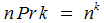

Combinations
RCombinations (Combinations w/Repeats)
Permutations
RPermutations (Permutations w/Repeats)
Order Matters?
No
No
Yes
Yes
Repeats Allowed?
No
Yes
No
Yes
Example Tree Structure
Incrementation Algorithm
Intuition:
Take only the sequences with digits in increasing order.
Take only the sequences with digits in equal or increasing order.
Like normal arithmetical incrementation, but after incrementing a digit, fill the following digits sequentially from zero, skipping the values of previous digits.
Increment the n-radix number representing the sequence (normal arithmetical incrementation).
Find Step:
-Find the first digit from the right that is less than n - 1 - m, where m is the number of digits to the right of the digit. Increment it.
-Find the first digit from the right that is less than n-1 and increment it.
-Find the first digit from the right that is less than n-1 and increment it, but skip the values of previous digits.
-Find the first digit from the right that is less than n-1 and increment it.
Fill Step:
-Fill the digits to the right of the incremented digit sequentially starting with the value of the incremented digit + 1.
-Fill the digits to the right of the incremented digit with the same value as the incremented digit.
-Fill the digits to the right of the incremented digit sequentially starting with 0, but skip the values of previous digits.
-Fill the digits to the right of the incremented digit with zeroes.
Example:
(n=8, k=5) 01367 -> 01456
(n=8, k=4) 6177 -> 6222
(n=8, k=5) 01547 -> 01560
(n=8, k=4) 6177 -> 6200
Total Number of Samples
Formula:
k'th number (counting from zero) of the n'th row of Pascal's triangle (e.g. the third row is [1,3,3,1])

sum of the first n numbers of order1 k, or the n'th number of order k+1

Deal with equal elements as follows: For each set of equal elements, divide the total number of samples by the factorial of the size of the set.

Derivation:
Algorithm:
Notes
-
- We could also only take sequences in decreasing order, or use some other kind of ordering.
- Can be used when elements are repeated a limited number of times - repeat elements are simply mapped to separate indices.
- The n elements must be unique. Duplicates should be culled.
-
- If n=k, the total number of samples = n!
- Keep a sorted vector of the current sequence (essentially the current combination), to quickly check when incrementing.
- The n elements must be unique. Duplicates should be culled.
Examples
-all k-note piano chords choosing from n keys
-all possible chords for a musical ensemble (possible unisons)
-all groups of k men from a pool of n men
-subset sums/products
-finding factors of a number using its prime factorization (subset products with possible repeated elements)
-all bouquets of k flowers each, from a field with n types of flowers
-all configurations of a family of n people around a dinner table with k chairs
-in sports, all possible k-man starting lineups for a team of n players
-all k-note melodies using n notes
-all coordinates on a k-dimensional grid